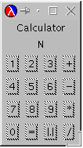

convertCF and
names from section 21.1 using the new recipe for
abstraction.
We have seen that functions can consume functions and how important that is for creating single points of control in a function. But functions not only can consume functions, they can also produce them. More precisely, expressions in the new Scheme can evaluate to functions. Because the body of a function definition is also an expression, a function can produce a function. In this section, we first discuss this surprising idea and then show how it is useful for abstracting functions and in other contexts.
While the idea of producing a function may seem strange at first, it is extremely useful. Before we can discuss the usefulness of the idea, though, we must explore how a function can produce a function. Here are three examples:
(define (f x) first) (define (g x) f) (define (h x) (cond ((empty? x) f) ((cons? x) g)))
The body of f is first, a primitive operation, so
applying f to any argument always evaluates to
first. Similarly, the body of g is f, so
applying g to any argument always evaluates to f.
Finally, depending on what kind of list we supply as an argument to
h, it produces f or g.
None of these examples is useful but each illustrates the basic idea. In
the first two cases, the body of the function definition is a function. In
the last case, it evaluates to a function. The examples are useless
because the results do not contain or refer to the argument. For a function
f to produce a function that contains one of f's
arguments, f must define a function and return it as the
result. That is, f's body must be a local-expression.
Recall that local-expressions group definitions and ask DrScheme to evaluate a single expression in the context of these definitions. They can occur wherever an expression can occur, which means the following definition is legal:
(define (add x) (local ((define (x-adder y) (+ x y))) x-adder))
The function add consumes a number; after all, x is added
to y. It then defines the function x-adder with a
local-expression. The body of the local-expression is x-adder, which means the
result of add is x-adder.
To understand add better, let us look at how an application of
add to some number evaluates:
(define f (add 5)) = (define f (local ((define (x-adder y) (+ 5 y))) x-adder)) = (define f (local ((define (x-adder5 y) (+ 5 y))) x-adder5)) = (define (x-adder5 y) (+ 5 y)) (define f x-adder5)
The last step adds the function x-adder5 to the collection of our
definitions; the evaluation continues with the body of the local-expression,
x-adder5, which is the name of a function and thus a value. Now
f is defined and we can use it:
(f 10) = (x-adder5 10) = (+ 5 10) = 15
That is, f stands for x-adder5, a function, which adds
5 to its argument.
Using this example, we can write add's contract and a purpose
statement:
;;add : number -> (number -> number);; to create a function that addsxto its input (define (add x) (local ((define (x-adder y) (+ x y))) x-adder))
The most interesting property of add is that its result
``remembers'' the value of x. For example, every time we use
f, it uses 5, the value of x, when add
was used to define f. This form of ``memory'' is the key to our
simple recipe for defining abstract functions, which we discuss in the next
section.
The combination of local-expressions and functions-as-values simplifies our
recipe for creating abstract functions. Consider our very first example in
figure 53 again. If we replace the contents of the
boxes with rel-op, we get a function that has a free variable. To
avoid this, we can either add rel-op to the parameters or we can
wrap the definition in a local and prefix it with a function that
consumes rel-op. Figure 59 shows what
happnes when we use this idea with filter. If we also make the
locally defined function the result of the function, we have
defined an abstraction of the two original functions.
Put differently, we follow the example of add in the preceding
section. Like add, filter2 consumes an argument, defines
a function, and returns this function as a result. The result remembers
the rel-op argument for good as the following evaluation shows:
(filter2 <)
= (local ((define (abs-fun alon t) (cond [(empty? alon) empty] [else (cond [(< (first alon) t) (cons (first alon) (abs-fun (rest alon) t))] [else (abs-fun (rest alon) t)])]))) abs-fun)
= (define (below3 alon t) (cond [(empty? alon) empty] [else (cond [(< (first alon) t) (cons (first alon) (below3 (rest alon) t))] [else (below3 (rest alon) t)])])) below3
Remember that as we lift a local definition to the top-level
definitions, we also rename the function in case the same local is
evaluated again. Here we choose the name below3 to indicate what
the function does. And indeed, a comparison between below and
below3 reveals that the only difference is the name of the
function.
From the calculation, it follows that we can give the result of
(filter2 <) a name and use it as if it were below. More
succinctly,
(define below2 (filter2 <))
is equivalent to
(define (below3 alon t) (cond [(empty? alon) empty] [else (cond [(< (first alon) t) (cons (first alon) (below3 (rest alon) t))] [else (below3 (rest alon) t)])])) (define below2 below3)
which means below2 is just another name for below3 and
which directly proves that our abstract function correctly implements below.
The example suggests a variant of the abstraction recipe from section 21:
local:
(local ((define (concrete-fun x y z) ... op1 ... op2 ...)) concrete-fun)
From that, we can create the abstract function by listing the names in the boxes as parameters:
(define (abs-fun op1 op2) (local ((define (concrete-fun x y z) ... op1 ... op2 ...)) concrete-fun))
If op1 or op2 is a special symbol, say <, we
name it something that is more meaningful in the new context.
below and
above. Obtaining below and above as instances of
filter2 is now straightforward:
(define below2 (filter2 <)) (define above2 (filter2 >))
We simply apply filter2 to the contents of the box in the
respective concrete function and that application produces the old
function.
Here is the contract for filter2:
;; filter2 : (X Y -> boolean) -> ((listof X) Y -> (listof X))
It consumes a comparison function and produces a concrete filter-style function.
The generalization of the contract works as before.
Given our experience with the first design recipe, the second one is only a question of practice.
Exercise 22.2.1.
Define an abstraction of the functions convertCF and
names from section 21.1 using the new recipe for
abstraction.  Solution
Solution
Exercise 22.2.2.
Define an abstract version of sort (see
exercise 19.1.6) using the new recipe for
abstraction.  Solution
Solution
Exercise 22.2.3.
Define fold using the new recipe for abstraction. Recall that
fold abstracts the following pair of functions:
Functions as first-class values play a central role in the design of graphical user interfaces. The term ``interface'' refers to the boundary between the program and a user. As long as we are the only users, we can apply functions to data in DrScheme's Interactions window. If we want others to use our programs, though, we must provide a way to interact with the program that does not require any programming knowledge. The interaction between a program and a casual user is the USER INTERFACE.
A GRAPHICAL USER INTERFACE (GUI) is the most convenient interface for casual users. A GUI is a window that contains GUI items. Some of these items permit users to enter text; others are included so that users can apply a specific function; and yet others exist to display a function's results. Examples include buttons, which the user can click with the mouse and which trigger a function application; choice menus, from which the user can choose one of a collection of values; text fields, into which the user can type arbitrary text; and message fields, into which a program can draw text.
|
Take a look at the simple GUI in figure 60. The left-most picture shows its initial state. In that state, the GUI contains a text field labeled ``Name'' and a message field labeled ``Number'' plus a ``LookUp'' button. In the second picture, the user has entered the name ``Sean'' but hasn't yet clicked the ``LookUp'' button.48 Finally, the right-most picture shows how the GUI displays the phone number of ``Sean'' after the user clicks the ``LookUp'' button.
The core of the program is a function that looks up a phone number for a name in a list. We wrote several versions of this function in part II but always used it with DrScheme's Interactions window. Using the GUI of figure 60, people who know nothing about Scheme can now use our function, too.
To build a graphical user interface, we build structures49 that correspond to the GUI items and hand them over to a GUI manager. The latter constructs the visible window from these items. Some of the structures' fields describe the visual properties of the GUI's elements, such as the label of a button, the initial content of a message field, or the available choices on a menu. Other fields stand for functions. They are called CALL-BACK FUNCTIONS because the GUI manager calls -- or applies -- these functions when the user manipulates the corresponding GUI element. Upon application, a call-back function obtains strings and (natural) numbers from the elements of the GUI and then applies the function proper. This last step computes answers, which the call-back function can place into GUI elements just like graphics functions draw shapes on a canvas.
|
The ideal program consists of two completely separate components: the MODEL, which is the kind of program we are learning to design, and a VIEW, which is the GUI program that manages the display of information and the user's mouse and keyboard manipulations. The bridge between the two is the CONTROL expression. Figure 61 graphically illustrates the organization, known as the MODEL-VIEW-CONTROL architecture. The lowest arrow indicates how a program makes up a button along with a call-back function. The left-to-right arrow depicts the mouse-click event and how it triggers an application of the call-back function. It, in turn, uses other GUI functions to obtain user input before it applies a core function or to display results of the core function.
The separation of the program into two parts means that the definitions for the model contain no references to the view, and that the definitions for the view contain no references to the data or the functionality of the model. The organization principle evolved over two decades from many good and bad experiences. It has the advantage that, with an adaptation of just the bridge expression, we can use one and the same program with different GUIs and vice versa. Furthermore, the construction of views requires different tools than does the construction of models. Constructing views is a labor-intensive effort and involves graphical design, but fortunately, it is often possible to generate large portions automatically. The construction of models, in contrast, will always demand a serious program design effort.
Here we study the simplified GUI world of the teachpack
gui.ss. Figure 62 specifies the operations that the
teachpack provides.50 The GUI
manager is represented by the function create-window. Its contract
and purpose statement are instructive. They explain that we create a window
from a list. The function arranges these lists in a corresponding number of
rows on the visible window. Each row is specified as a list of
gui-items. The data definition for gui-items in
figure 62 shows that there are four kinds:
(make-text a-string) and
allow users to enter arbitrary text into an area in the window;
(make-button a-string
a-function) and allow users to apply a function with the click of a mouse
button;
(make-choice
a-list-of-strings) and allow users to pick a choice from a specified set
of choices; and
(make-message
a-string) and enable the model to inform users of results.
The function that goes with a button is a function of one argument: an event. For most uses, we can ignore the event; it is simply a token that signals the user's click action.
How all this works is best illustrated with examples. Our first example is a canonical GUI program:
(create-window (list (list (make-button "Close" hide-window))))
It creates a window with a single button and equips it with the simplest of
all call-backs: hide-window, the function that hides the window. When
the user clicks the button labeled "Close", the window disappears.
The second sample GUI copies what the user enters into a text field to a message field. We first create a text field and a message field:
(define a-text-field (make-text "Enter Text:")) (define a-message (make-message "`Hello World' is a silly program."))
Now we can refer to these fields in a call-back function:
;;echo-message : X -> true;; to extract the contents ofa-text-fieldand to draw it intoa-message(define (echo-message e) (draw-message a-message (text-contents a-text-field)))
The definition of the call-back function is based on our (domain) knowledge
about the gui-items. Specifically, the function
echo-message obtains the current contents of the text field with
text-contents as a string, and it draws this string into the
message field with the draw-message function. To put everything
together, we create a window with two rows:
(create-window (list (list a-text-field a-message) (list (make-button "Copy Now" echo-message))))
The first row contains the text and the message field; the second one
contains a button with the label "Copy Now" whose call-back
function is echo-message. The user can now enter text into the
text field, click the button, and see the text appear in the message
field of the window.
The purpose of the third and last example is to create a window with a
choice menu, a message field, and a button. Clicking the button puts the
current choice into the message field. As before, we start by defining the
input and output gui-items:
(define THE-CHOICES (list "green" "red" "yellow")) (define a-choice (make-choice THE-CHOICES)) (define a-message (make-message (first THE-CHOICES)))
Because the list of choices is used more than once in the program, it is specified in a separate variable definition.
As before, the call-back function for the button interacts with
a-choice and a-message:
;;echo-choice : X -> true;; to determine the current choice ofa-choiceand ;; to draw the corresponding string intoa-message(define (echo-choice e) (draw-message a-message (list-ref THE-CHOICES (choice-index a-choice))))
Specifically, the call-back function finds the 0-based index
of the user's current choice with choice-index, uses Scheme's
list-ref function to extract the corresponding string from
THE-CHOICES, and then draws the result into the message field of
the window. To create the window, we arrange a-choice and
a-message in one row and the button in a row below:
(create-window (list (list a-choice a-message) (list (make-button "Confirm Choice" echo-choice))))
|
Now that we have examined some basic GUI programs, we can study a program
with full-fledged core and GUI components. Take a look at the definitions
in figure 63. The program's purpose is to echo the values
of several digit choice menus as a number into some message field. The
model consists of the build-number function, which converts a list
of (three) digits into a number. We have developed several such functions,
so the figure mentions only what it does. The GUI component of the program
sets up three choice menus, a message field, and a button. The control
part consists of a single call-back function, which is attached to the
single button in the window. It determines the (list of) current choice
indices, hands them over to build-number, and draws the result as
a string into the message field.
Let's study the organization of the call-back functions in more detail. It composes three kinds of functions:
The innermost function determines the current state of the
gui-items. This is the user's input. With the given functions, we
can determine the string that the user entered into either a text field or
the 0-based index of a choice menu.
This user input is consumed by the main function of the model. The call-back function may convert the user's string into some other data, say, a symbol or a number.
The result of the model function, in turn, is drawn into a message field, possibly after converting it to a string first.
The control component of a program is also responsible for the visual
composition of the window. The teachpack provides only one function for
this purpose: create-window. Standard GUI toolboxes provide many
more functions, though all of these toolboxes differ from each other and
are changing rapidly.
Exercise 22.3.1. Modify the program of figure 63 so that it implements the number-guessing game from exercises 5.1.2, 5.1.3, and 9.5.5. Make sure that the number of digits that the player must guess can be changed by editing a single definition in the program.
Hint: Recall that exercise 11.3.1 introduces a function that
generates random numbers.  Solution
Solution
Exercise 22.3.2.
Develop a program for looking up phone numbers. The program's GUI should
consist of a text field, a message field, and a button. The text field
permits users to enter names. The message field should display the number
that the model finds or the message "name not found", if the model
produces false.
Generalize the program so that a user can also enter a phone number (as a sequence of digits containing no other characters).
Hints: (1) Scheme provides the function string->symbol for
converting a string to a symbol. (2) It also provides the function
string->number, which converts a string to a number if
possible. If the function consumes a string that doesn't represent a
number, it produces false:
( string-> number "6670004") = 6670004
( string-> number "667-0004") = false
The generalization demonstrates how one and the same GUI can use two distinct models.
Real-world GUIs: The graphical user interface in
figure 60 was not constructed from the items provided by
the teachpack. GUIs constructed with the teachpack's gui-items are
primitive. They are sufficient, however, to study the basic
principles of GUI programming. The design of real-world GUIs involves
graphics designers and tools that generate GUI programs (rather than making
them by hand).  Solution
Solution
Exercise 22.3.3.
Develop pad->gui. The function consumes a title (string) and a
gui-table. It turns the table into a list of lists of
gui-items that create-window can consume. Here is the
data definition for gui-tables:
a number,
a symbol.
A gui-table is a (listof (listof cell)) .
Here are two examples of gui-tables:
(define pad '((1 2 3) (4 5 6) (7 8 9) (\# 0 *))) | (define pad2 '((1 2 3 +) (4 5 6 -) (7 8 9 *) (0 = \. /))) |
The function pad->gui should turn each cell into a button. The
resulting list should be prefixed with two messages. The first one displays
the title and never changes. The second one displays the latest button that
the user clicked. The two examples above should produce the following two
GUIs:
| |
 |
Hint: The second message header requires a short string, for example,
"N", as the initial value.  Solution
Solution
48 The program has also cleared the result field to avoid any misunderstanding. Similarly, the user could also just hit the enter key instead of clicking the button. We ignore such subtleties here.
49 More precisely, we construct an object, but we do not need to understand the distinction between a structure and an object here.
50 The gui-items aren't really
structures, which explains the font of the operations' names.
![[curriculum3a-Z-G-1.gif]](curriculum3a-Z-G-1.gif)